Workflow
Der Bearbeitungsstand einer Aufgabe kann mit verschiedenen Aufgabenstatus gekennzeichnet werden. Dabei kann es von Bedeutung sein, welcher Mitarbeiter oder welche Rolle eine Statusänderung vornehmen darf. Die Abfolge der Status und die Berechtigungen zur Statusänderung können mit Hilfe der Workflows gesteuert werden.
So kann z.B. nur Mitgliedern, die die Rolle Aufgabenverantwortlich haben, das Recht gegeben werden, eine Aufgabe auf den Status storniert zu setzen. Weiter bieten Workflows die Möglichkeit, die Sichtbarkeit und Bearbeitbarkeit jedes einzelnen Aufgabendatenfeldes für jede Rolle festzulegen. Somit kann auch hier eine rollenbasierte Bearbeitung der Aufgaben abgebildet werden.
Ein Workflow beschreibt damit die Rechte einer Rolle für einem Aufgabentyp in Bezug auf erlaubte Statusänderungen und die Bearbeitung von Aufgabendatenfeldern.
| Ist für einen Aufgabentyp kein Workflow definiert, so kann der Aufgabentyp zwar einer Aufgabe zugeordnet werden. Jedoch kann der Status dann von keiner Rolle (einschließlich Administrator) mehr verändert werden. |
Bearbeitet werden die Workflows im Administrationsbereich über den Menüpunkt Workflow. Es erscheint folgende Ansicht:
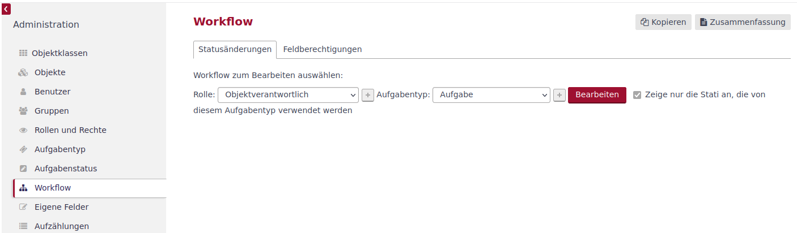
In der Erstansicht werden zwei Tabs, Statusänderungen und Feldberechtigungen, angeboten. In beiden Tabs ist für die Bearbeitung die Kombination aus Rolle und Aufgabentyp festzulegen. Mit dem Button 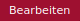 wird für die gewählte Kombination der Bearbeitungsbereich eingeblendet.
| Workflows müssen nicht vom Administrator angelegt werden, da mit dem Anlegen einer Rolle oder eines Aufgabentyps automatisch ein Workflow ohne Rechte zur Statusänderung und den vollen Rechten zur Feldberechtigung angelegt wird. |
Statusänderungen bearbeiten
Die Darstellung und Bearbeitung der Berechtigungen einer Rolle in einem Aufgabentyp erfolgt, in dem auf der Workflowseite die Rolle und der Aufgabentyp gewählt werden und diese Auswahl mit dem Button aufgerufen wird. Es wird, wie im folgenden Bild zu sehen, eine Statusmatrix angezeigt.
Die Zeilen beschreiben den Ausgangsstatus, aus dem eine Änderung erfolgen soll. Die Spalten beschreiben die Zielstatus, in die der Ausgangsstatus verändert werden kann.
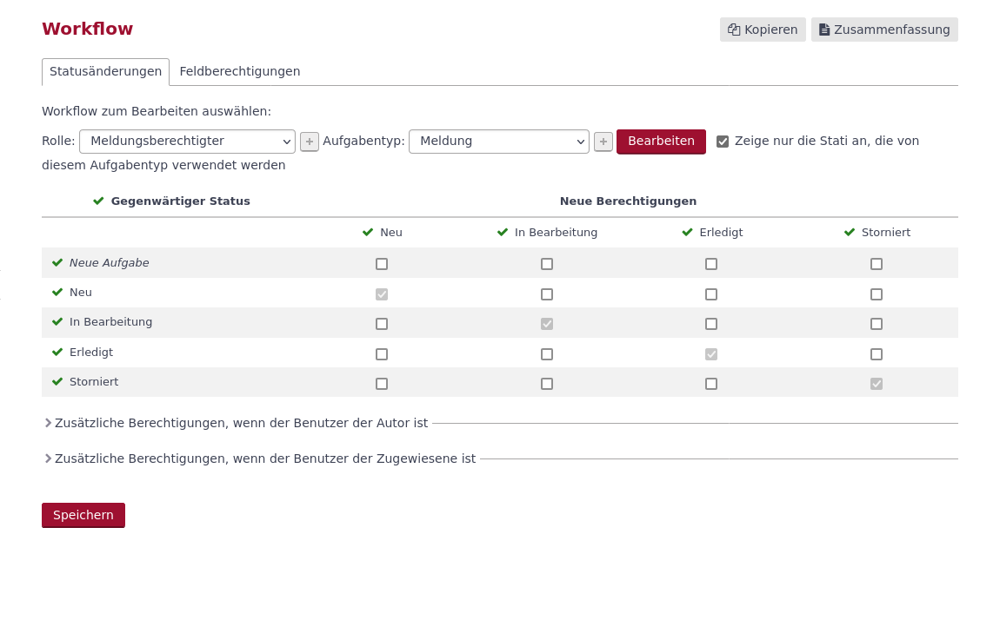
Die Statusmatrix im Bild oben zeigt eine Rolle, die keine Rechte hat, einen Status zu verändern. So kann in dem Beispiel die Rolle Meldungsberechtigter eine Aufgabe von dem Typ Meldung anlegen, aber dabei keinen Status wählen, da in der Zeile Neue Aufgabe kein Zielstatus angekreuzt ist. Bei den anderen Zeilen ist (automatisch) jeweils nur der Haken beim Zielstatus gleich Ausgangsstatus gesetzt, womit keine Statusänderung für diese Rolle möglich ist.
Um Statusänderungen durchführen zu können, muss für den entsprechenden Ausgangsstatus der Zielstatus definiert werden, damit die gewählte Rolle einen Bearbeitungsschritt einleiten oder abschließen kann.
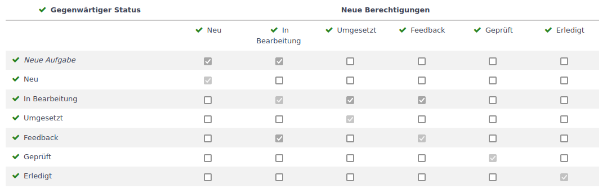
In dem Beispiel oben darf die Rolle aus dem Status In Bearbeitung in den Status Umgesetzt oder Feedback gesetzt werden. Aus dem Status Feedback kann die Aufgabe wiederum in den Status In Bearbeitung zurück versetzt werden.
In der Standardeinstellung ist die Einstellung Zeige nur die Status an, die von diesem Aufgabentyp verwendet werden aktiviert. Wird die Einstellung zurückgenommen (siehe roter Kringel im folgenden Bild), werden alle im System vorhandenen Status angezeigt.
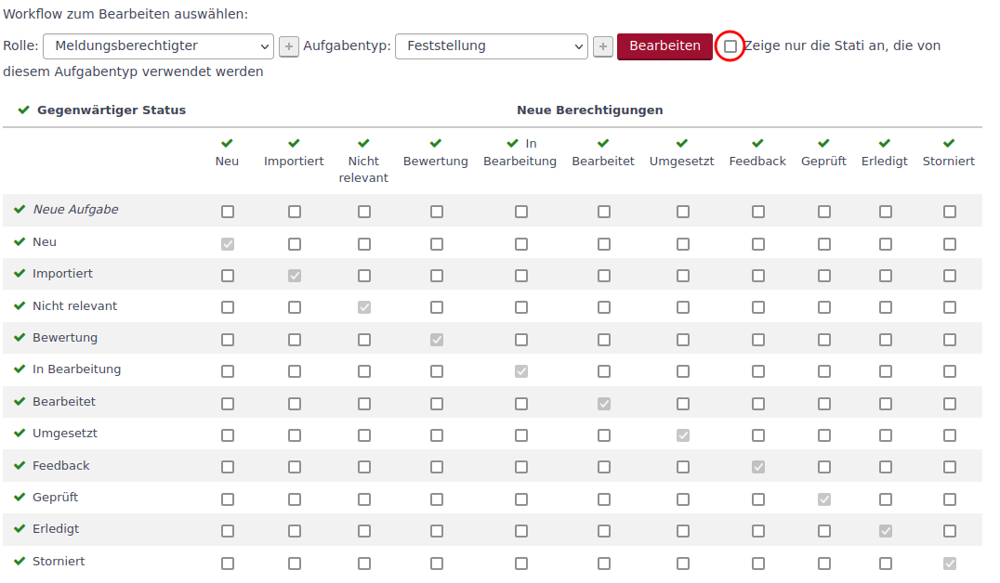
Somit lassen sich für den Aufgabentyp weitere Status in den Workflow einbinden.
Übernommen werden die Änderungen mit dem Klick auf den Button  .
.
Unterhalb der Statusmatrix können erweiterte Statusberechtigungen für den Autor oder das zugewiesenen Mitglied vorgenommen werden. Die Statusmatrix für diese besonderen Rollen kann durch Klick auf den Pfeil (rote Kreise in den Bildern unten) neben der Überschrift ein- und ausgeblendet werden.
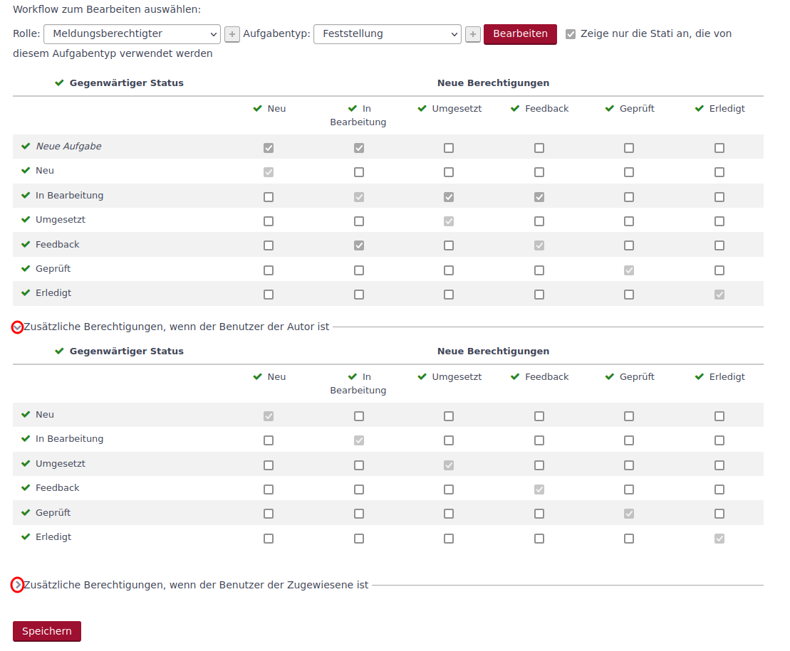
Werden in diesen Matrizen weitere Berechtigungen festgelegt, kann ein Autor oder das zugewiesene Mitglied mit der Rolle des Workflows diese erweiterten Rechte nutzen.
Feldberechtigungen bearbeiten
Im Tab Feldberechtigung besteht die Möglichkeit jedes Aufgabendatenfeld für die gewählte Rolle in Abhängigkeit vom Status der Aufgabe
-
für die Bearbeitung zu sperren (Nur-Lese-Zugriff) oder
-
zum Pflichtfeld zu machen (Erforderlich).
Dieses wird, wie im folgenden Bild zu sehen, in einer Feld/Status-Matrix umgesetzt.

Für jede Feld-Status-Kombination kann die Berechtigung verändert werden. Dafür können über das Dropdown-Menü die Einträge verändert werden.
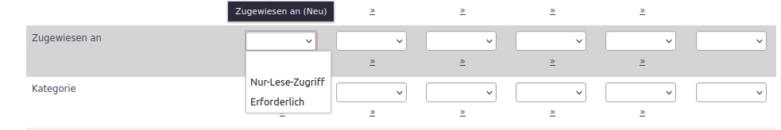
| Bei Pflichtfeldern steht die Auswahl Erforderlich nicht zur Verfügung, da dieses Feld bereits diesen Status besitzt. |
Mit dem Klick auf den Button , der unterhalb oder rechts vom Auswahlfeld ist, kann die Feldberechtigung in die folgenden Felder kopiert werden.
Ein Beispiel ist im folgenden Bild zu sehen.
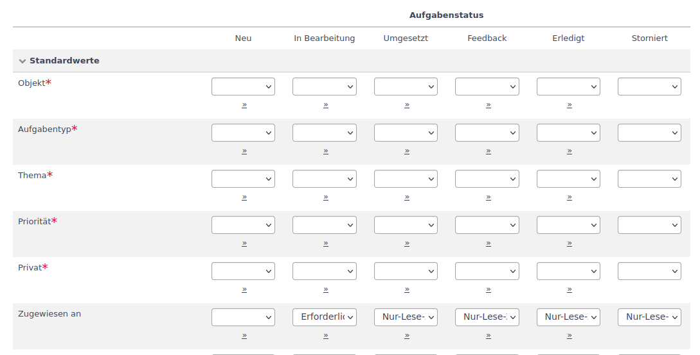
Das Feld Zugewiesen an ist im Status Neu optional. Wird der Status in Bearbeitung gesetzt, ist es ein Pflichtfeld. In den weiteren Status kann es nicht verändert werden.
Kopieren
Da der Aufwand, einen Aufgabentyp per Workflows zu definieren, recht hoch ist, ist das Kopieren und anschließende Anpassen der kopierten Workflows häufig der sinnvollere Weg. Aus diesem Grund wird bei der Erstellung einer Rolle oder Erstellung eines Aufgabentyps direkt das Kopieren der Workflows von einer bestehenden Rolle oder eines bestehenden Aufgabentyps angeboten.
Dieses kann aber auch im Nachgang über die Kopierfunktion im Workflowbereich umgesetzt werden. Im oberen rechten Bereich kann die Kopierfunktion über den Button 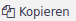 aufgerufen werden. Er erscheint folgende Eingabemöglichkeit:
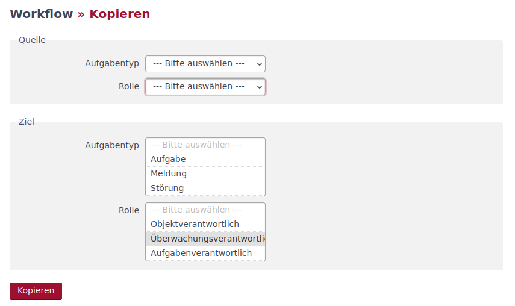
In dieser Maske kann im Bereich Quelle eine Kombination aus Aufgabentyp und Rolle gewählt werden. Dieser Workflow wird dann in eine oder mehrere Workflows (im Bereich Ziel ist eine Mehrfachauswahl möglich) kopiert.
Um nicht jeden Workflow einzeln kopieren zu müssen, kann als Quelle So wie das Ziel definiert werden. Somit ist es auf diese Weise zum Beispiel möglich, einer Zielrolle alle Rechte einer Quellrolle zuzuordnen, in dem als Quellaufgabentyp die Auswahl So wie das Ziel gewählt wird und über die Mehrfachauswahl im Zielaufgabentyp alle Aufgabentypen ausgewählt werden.
Zusammenfassen
Im oberen rechten Bereich der Workflowseite kann durch Klick auf den Button 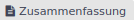 die Zusammenfassung der Workflows aufgerufen werden.
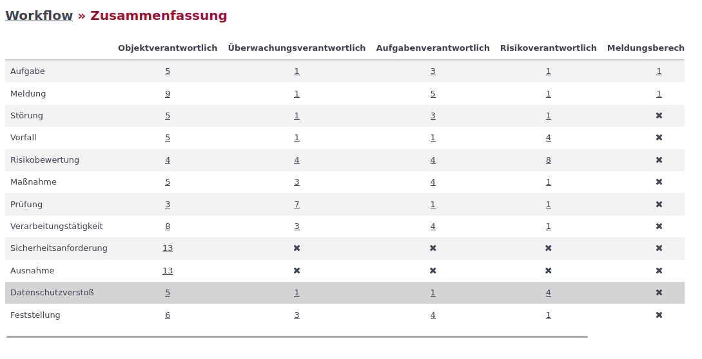
Die Zusammenfassung ist eine Kreuztabelle. In den Zeilen werden die Aufgabentypen und in den Spalten die Rollen dargestellt. Jede Kombination aus Aufgabentyp und Rolle bildet einen Workflow ab. In dem Kreuzungspunkt wird die Anzahl der Rechte zum Statuswechsel angezeigt. Ist die Anzahl Null, so wird ein X dargestellt. Durch Klick auf die Zahl bzw. das X wird der zugehörige Workflow eingeblendet.
| Reicht die Monitorbreite nicht aus, so wird im unteren Bereich der Kreuztabelle ein Scrollbalken angeboten. |